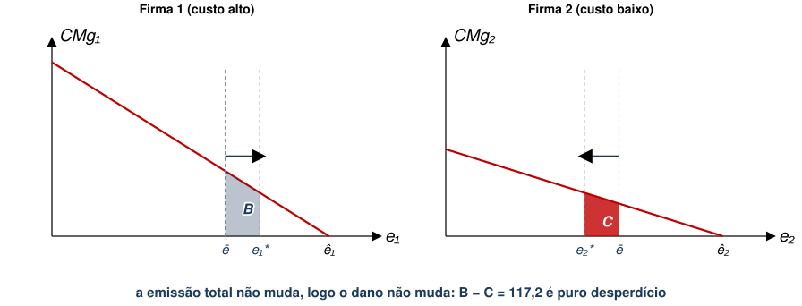
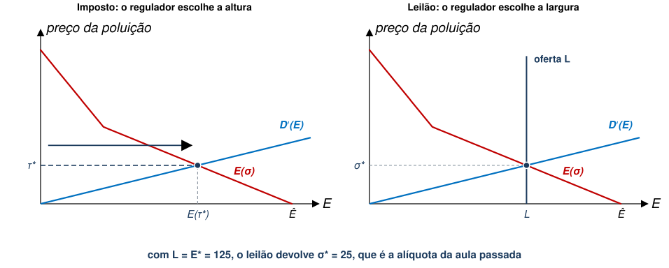
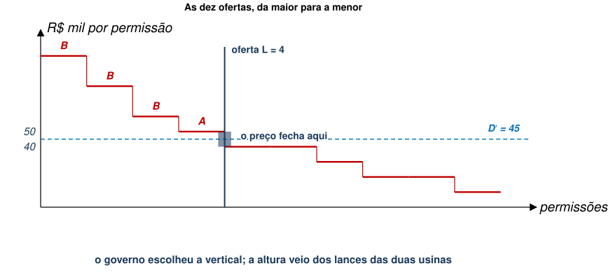
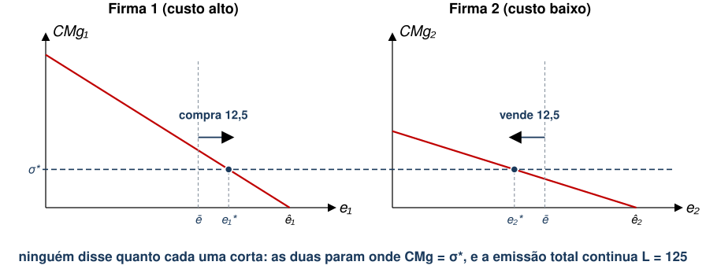
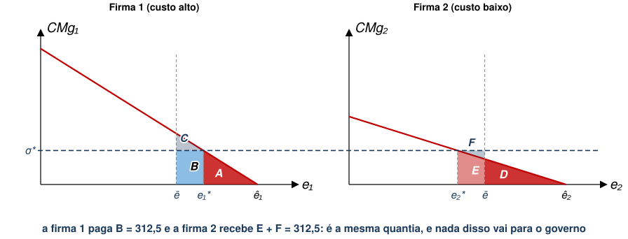
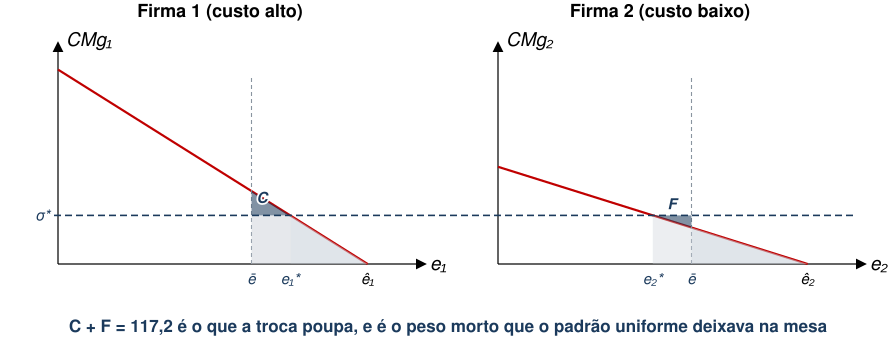
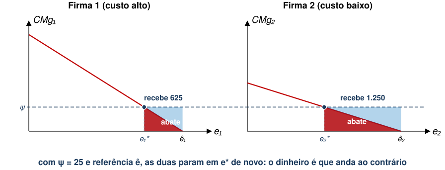
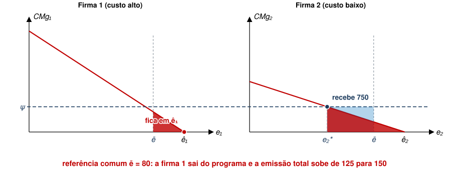

EAE1317 — Economia do Meio Ambiente e dos Recursos Naturais
2026-08-27
Referências: Phaneuf e Requate, cap. 3; Keohane e Olmstead, cap. 8
1. Prescrever o regulador diz o que fazer: tecnologia obrigatória ou limite de emissão por fonte
2. Precificar o regulador põe um preço na emissão: imposto ou subsídio
3. Limitar quantidade o regulador fixa o total e deixa o mercado repartir permissões
4. Informar o regulador informa população com inventários de emissão, selos e certificações
A figura é a mesma da aula passada. Só a leitura muda.

Falta dizer como se forma o preço dessa troca. Trataremos disso a seguir.
Suponha que, ao invés de cobrar um imposto ex-post da firma poluidora, o governo leiloe permissões ex-ante.
Qual função de custo total a firma minimiza neste caso?
\[{\sigma }^{*}={D}^{′}\left({E}^{*}\right)\]
\[E\left(\sigma \right)=\sum_{j=1}^{J} {e}_{j}(\sigma )\]
É a mesma soma horizontal que já vimos, porém com \(\sigma\) no lugar de \(\tau\).
\[L=E(\sigma )=\sum_{j=1}^{J} {e}_{j}(\sigma )\]
Se o governo conhece a demanda agregada por permissões ou a curva de custo de abatimento agregada, pode definir \(L\) de modo a induzir \({E}^{*}\).

Em duplas, 5 minutos. As mesmas usinas: cada uma emite 50 t e corta em blocos de 10 t, aos custos abaixo (em R$ mil), e cada 10 t emitidas causam R$ 45 mil de dano.
| 1º bloco | 2º | 3º | 4º | 5º | |
|---|---|---|---|---|---|
| Usina A | 10 | 20 | 30 | 40 | 50 |
| Usina B | 20 | 40 | 60 | 80 | 100 |
(a) Uma permissão dispensa o bloco mais caro que a usina teria de cortar. Com \(k\) permissões ela emite \(10k\) e corta os \(5-k\) blocos mais baratos.
| 1ª permissão | 2ª | 3ª | 4ª | 5ª | |
|---|---|---|---|---|---|
| Usina A | 50 | 40 | 30 | 20 | 10 |
| Usina B | 100 | 80 | 60 | 40 | 20 |

(c) Com 2 permissões cada, A vende uma a B: ela vale 40 para A e 60 para B. As duas terminam com 1 e 3, como no leilão.
| Permissões de A | de B | Abatimento | Conta de A | Conta de B | Ao governo | |
|---|---|---|---|---|---|---|
| Leilão das 4 | 1 | 3 | 160 | 145 | 195 | 180 |
| Entrega de 2 e 2, com troca | 1 | 3 | 160 | 55 | 105 | 0 |
| Diferença | 0 | 0 | 0 | 90 | 90 | 180 |
Ao invés de leiloar permissões diretamente, o governo pode distribuir uma dotação inicial de permissões para cada firma.
Firmas podem comprar e vender permissões
Isto é similar ao que vimos na seção de Comando e Controle com Cotas Negociáveis.
Suponha que a firma \(j\) receba permissões equivalentes a \(\bar{e}_{j}\).
Denote \(\sigma\) como o preço de cada permissão no mercado. O custo total da firma é dado por
\[T{C}_{j}\left({e}_{j}\right)={C}_{j}\left({e}_{j}\right)+\sigma \left({e}_{j}-\bar{e}_{j}\right)\]
Note que
Minimização de custos implica novamente em \(-{C}_{j}^{′}\left({e}_{j}\right)=\sigma\)
Qual é a condição de equilíbrio de mercado neste caso?
\[\sum_{j=1}^{J} {e}_{j}\left(\sigma \right)=\sum_{j=1}^{J} \bar{e}_{j}=L\]
O preço \(\sigma\) é determinado implicitamente por essa condição.
Voltemos ao caso de apenas duas firmas, com a dotação \(\bar{e}\) repartida igualmente.


Gasto da indústria com abatimento é \(\left(A+D+E\right)\) ao invés de \(\left(A+B+C+D\right)\).

Vimos que a mesma alocação surge no casos em que leilão ou mercado de permissões induzem preço \(\sigma\).
O mercado europeu de carbono (EU ETS) permite testar isso com dados (Zaklan 2023).
1. Prescrever o regulador diz o que fazer: tecnologia obrigatória ou limite de emissão por fonte
2. Precificar o regulador põe um preço na emissão: imposto ou subsídio
3. Limitar quantidade o regulador fixa o total e deixa o mercado repartir permissões
4. Informar o regulador informa população com inventários de emissão, selos e certificações
Às vezes, é mais factível subsidiar firmas para que adotem tecnologias limpas ao invés de tributar a poluição.
É a pergunta distributiva do Teorema de Coase, de novo: o direito de poluir é da firma e consumidores precisam incentivá-la a reduzir poluição.
Suponha que uma firma receba subsídio para reduzir poluição abaixo de algum nível de referência.
Assim, a função de custo total da poluição fica
\[T{C}_{j}\left({e}_{j}\right)={C}_{j}\left({e}_{j}\right)+\psi \left({e}_{j}-\hat{e}_{j}\right)\]
Chegamos a uma C.P.O. similar: \(-{C}_{j}^{′}\left({e}_{j}\right)=\psi\)

Subsídios têm uma nuance importante.
Suponha que a referência seja \(\bar{e}\), igual para todas as firmas.

Com a referência individual, imposto e subsídio produzem a mesma emissão. Mas o caixa da firma vai para lados opostos.
| Imposto \({\tau }^{*}=25\) | Subsídio \(\psi =25\) | |
|---|---|---|
| Emissão da Firma 1 | 75 | 75 |
| Custo de abatimento | 312,5 | 312,5 |
| Fluxo de dinheiro | paga 1.875 | recebe 625 |
| Resultado para a firma | 2.187,5 de despesa | 312,5 de ganho |
| Imposto \({\tau }^{*}\) | Leilão de \(L\) | Permissões grátis | Subsídio \(\psi\) | |
|---|---|---|---|---|
| Emissão total | 125 | 125 | 125 | 125 |
| \(CM{g}_{1}\) e \(CM{g}_{2}\) | \(25=25\) | \(25=25\) | \(25=25\) | \(25=25\) |
| Custo de abatimento | 938 | 938 | 938 | 938 |
| Custo social | 2.500 | 2.500 | 2.500 | 2.500 |
| Quem paga a quem? | firmas ao governo, 3.125 | firmas ao governo, 3.125 | firma 1 à firma 2, 312,5 | governo às firmas, 1.875 |
EAE1317 — Economia do Meio Ambiente e dos Recursos Naturais